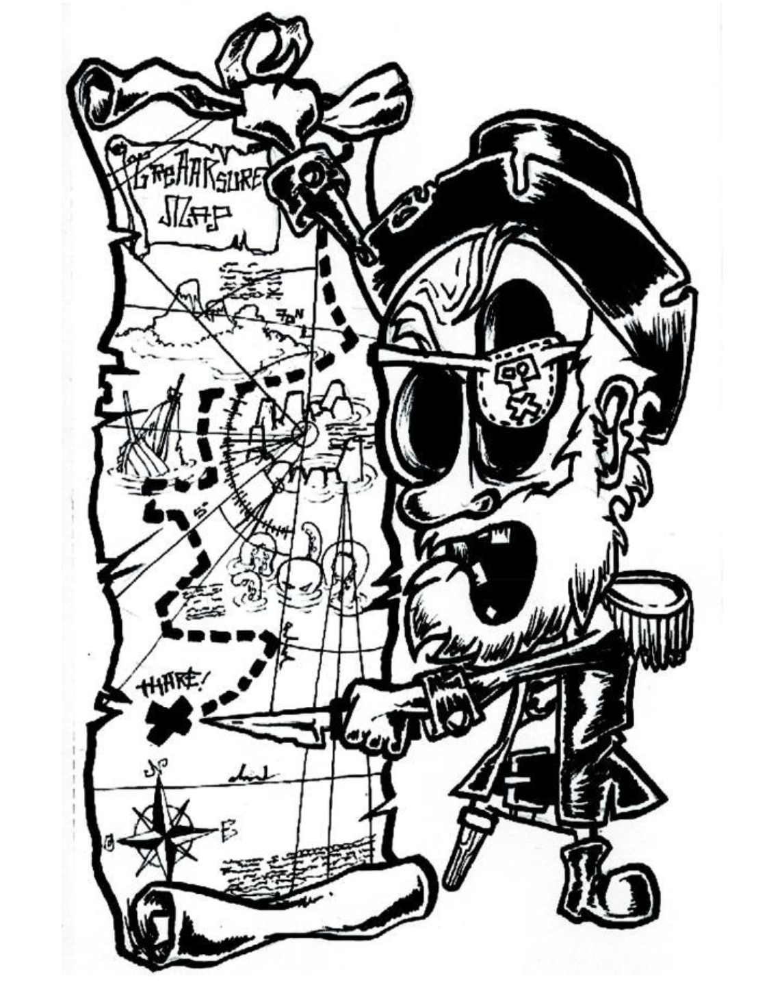

Cette section est en développement...
À terme nous aurons ici un catalogue de formations et des liens vers des référentiels Github, pour le code impliqué dans les projets (Arduino, Raspberry Pi, 3D printing, etc).
L'état actuel des choses est disponible dans l'onglet "Ressources".
À terme nous aurons ici un catalogue de formations et des liens vers des référentiels Github, pour le code impliqué dans les projets (Arduino, Raspberry Pi, 3D printing, etc).
L'état actuel des choses est disponible dans l'onglet "Ressources".